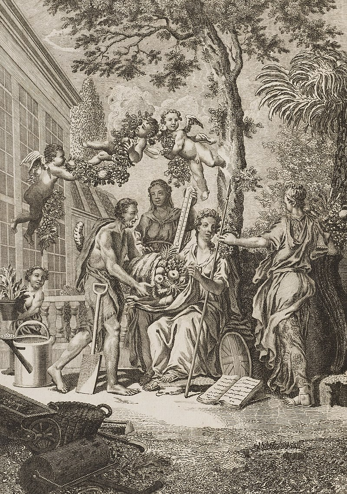
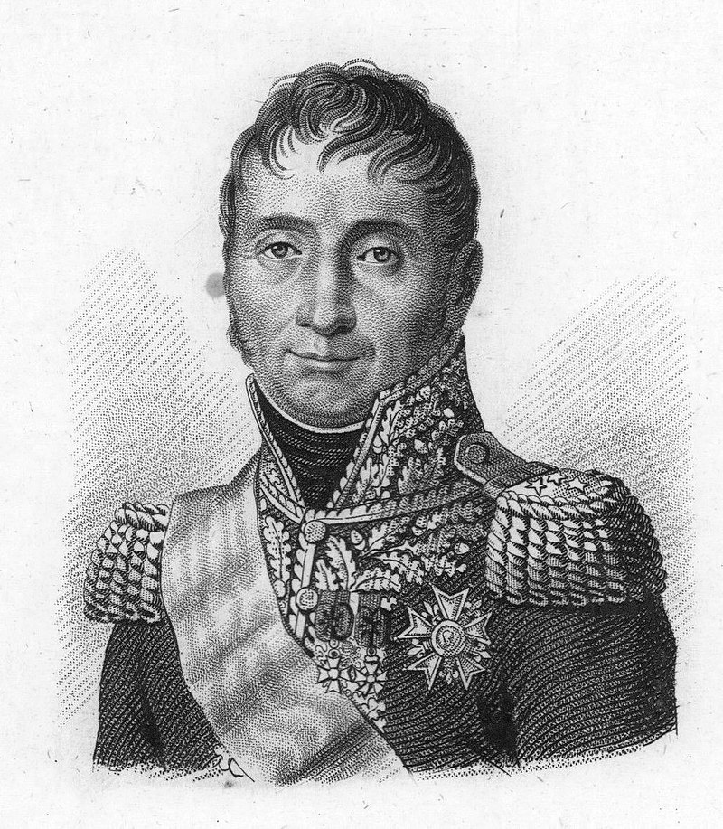
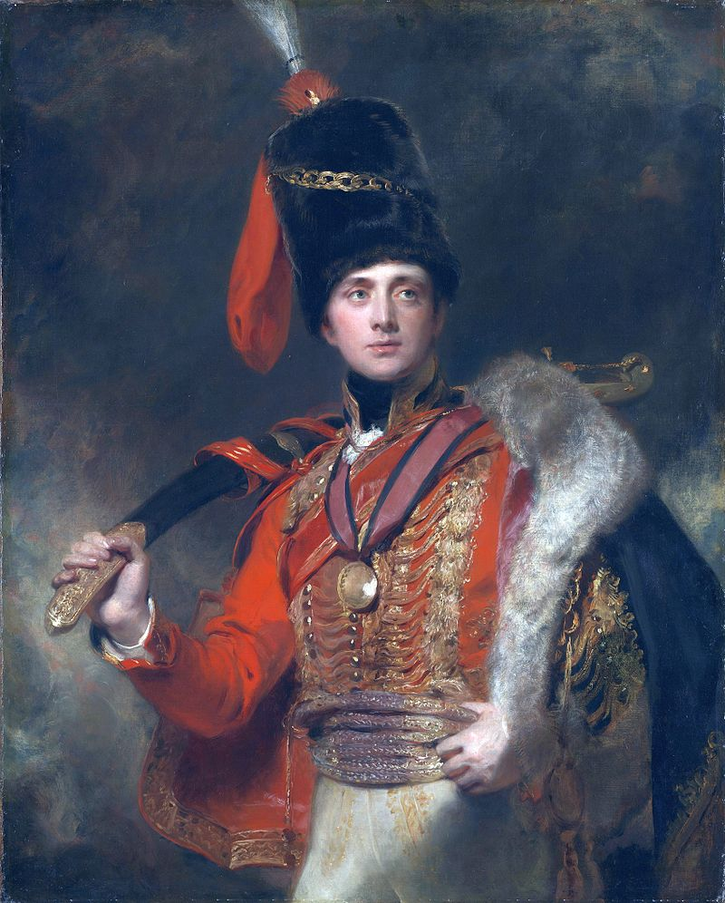
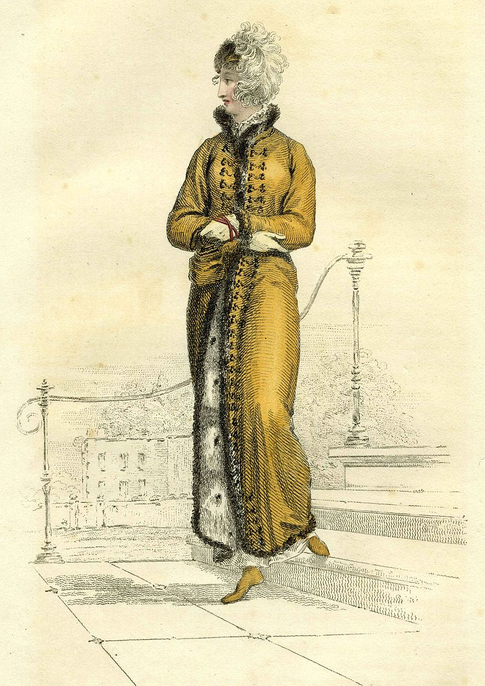
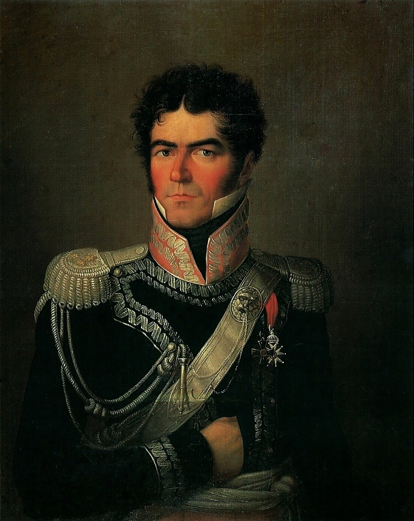

모스크바에서의 생활 (2) - 털가죽 광풍과 편지
게시: 2021-03-15T06:30:30+09:00
모스크바 시내 상점들은 대부분 문을 닫았고 상인들은 피난을 떠났지만, 곧 모스크바 시내 곳곳에서는 가판대가 생겨나 활발하게 상거래가 이루어졌습니다. 어떤 용감한 러시아인들이 난폭한 프랑스 병사들에게 제값을 받고 물건을 팔려고 했을까요? 처음에는 그런 용감한 러시아 상인들이 다소 있었을지 몰라도 그런 사람들은 곧 프랑스 병사들에게 봉변만 당하고 도망쳤습니다. 이런 가판대에서 물건을 사는 사람도, 또 가판대 뒤에 서서 물건을 파는 사람도 대부분 프랑스 병사들이었습니다. 이런 가판대는 무척이나 자연발생적인 것이었습니다. 모스크바 대화재 때 너도나도 할 것 없이 한몫 챙긴 바가 있고, 또 정상적인 보급이 이루어지지 않으니 서로 필요한 것이 많았던 것입니다. 특히 대화재 초기에 진화 임무에 투입되었던 근위대 척탄 연대 병사들은 약탈물이 가장 많았고, 이들은 아예 크레믈린 궁전 바로 밖에 장터를 세우고 물건을 팔았습니다. 병사들은 이런 곳에서 서로 가진 것을 사고 팔고 교환했습니다. 이런 가판대 상거래에서의 특징은 화폐보다는 물물교환이 훨씬 더 왕성하게 일어났다는 것입니다. 어차피 돈보다는 실물이 훨씬 더 가치있는 상황이었으니까요. 여기서는 온갖 고급 와인과 코냑을 시음해볼 수도 있었고 귀한 과자도 먹어볼 수 있었습니다. 심지어 어떤 병사들은 평생 처음으로 파인애플을 이 모스크바에서 맛보기도 했습니다.

(1764년 영국에서 발간된 식물 사전(The Gardeners Dictionary) 표지에도 파인애플이 보입니다. 그런데 파인애플은 영어로만 pineapple이고, 프랑스어로는 아나나(ananas), 스페인어로도 아나나(ananá), 독일어로도 아나나스(ananas)입니다. 원래 파라과이-브라질 지역이 원산지였던 이 과일 이름이 이렇게 영어로만 파인애플이 된 것은 프랑스 신부이자 탐험가인 떼베(André Thevet)의 저서를 번역하는 과정에서 비롯된 것입니다. 이 책에서 떼베는 지금의 리우 데 자네이로 지방의 원주민들이 재배하는 nanas라는 과일에 대해 언급을 했는데, 나나스는 그 지방 말로 맛있는 과일을 뜻하는 것이었습니다. 그런데 이것이 영어로 번역되면서 '소나무 사과처럼 재배된 nana'라고 소개가 되었습니다. 다른 나라에서는 다 제대로 nanas에 집중하여 아나나로 받아들였는데, 오직 영국에서만 소나무 사과에 집중하여 파인애플이 되어버렸다고 합니다.) 그러나 장교들과 병사들이 가장 열광했던 상품은 먹을 것이나 마실 것이 아니었습니다. 모두들 돈을 벌길 원했고, 형편이 좀 되는 장교들은 고향의 와이프, 연인, 정부, 여동생 등에게 갖다줄 선물을 마련하려 애썼습니다. 죽을지 살지 모르는 전쟁터로 나가는 사람에게 돈을 벌어오길 원하거나 선물을 사오길 원하는 가족이나 연인은 없을 것 같습니다만, 실제로 많은 이들이 한몫 벌 것을 꿈꾸며 러시아 원정에 참여했습니다. 한 50대 프랑스인은 그가 평생 해온 사무직이 지겹기도 하고 뭔가 크게 한탕 할 수 있을 것이라는 기대로 러시아 원정군에 병참 보급관으로 참여했습니다. 그는 고향의 와이프에게 보내는 편지에서 자기 생각이 정말 잘못된 것이었다는 후회와 함께 '심지어 러시아에는 예쁜 여자도 없다'라는 부적절한 불평까지 늘어놓았습니다. 아마 이 보급관은 살아서 고향에 돌아갔어도 과연 천수를 누리지는 못했을 것 같습니다. 의외로 상당수의 장교들은 와이프나 연인 등으로부터 '러시아에서 사올 쇼핑 리스트'를 받아가지고 왔습니다. 사실 리스트까지도 필요없었습니다. 많은 프랑스 여성들은 러시아라는 이름을 들으면 털가죽을 연상했고, 남편 또는 애인이 러시아에 쳐들어간다는 말을 듣고는 꼭 담비 가죽이나 여우 가죽 등을 구해올 것을 부탁해놓았습니다. 나폴레옹의 대륙봉쇄령으로 인해 바닷길이 막히면서 그런 해외 수입품들의 가격은 천정부지로 치솟았는데, 당시 유행하던 드레스는 어깨가 훤히 드러나는 로우컷(low-cut) 스타일이라서 어깨에 걸치는 목도리와 숄 등이 필수였기 때문이었습니다. 그리고 프랑스 남자들은 사랑하는 여성들이 준 임무를 나폴레옹이 부여한 임무 못지 않게 열심히 수행했습니다. 보로디노 전투에서 '바그라티온의 철각보'를 공격하다 부상을 입고 쓰러졌던 콩팡(Jean Dominique Compans) 장군은 원정 직전에 결혼한 새신랑이었는데, 병상에 누워서도 부인이 준 임무 수행을 위해 부하들을 닥달하고 있었습니다. 그러나 그게 쉽지가 않았습니다. 모스크바 대화재는 프랑스군이 먹고 마실 밀가루와 와인보다는 프랑스 여인들이 갈구하던 털가죽에 더 큰 피해를 끼쳤던 것입니다. 밀가루와 와인은 주로 지하창고에 보관했기에 무사했지만 털가죽은 윗층 옷장에 보관했기 때문이었지요.

(콩팡(Jean Dominique Compans) 장군입니다. 나폴레옹과 동갑이었던 그는 란, 그리고 나중에는 술트 밑에서 지휘관을 했고 마렝고와 아우스테를리츠 등에서 공훈을 세웠습니다. 1815년 나폴레옹의 백일천하 때는 나폴레옹 편에 붙었으나 현역 군 지휘관으로는 뛰지 않아 부르봉 왕가로부터 용서를 받았고, 대신 네 원수의 재판에서 사형 언도에 찬성표를 던지는 배신 행위를 했습니다.) 10월 14일, 콩팡 장군은 마침내 와이프에게 구구절절 자신이 고생한 내용을 담은 편지를 보낼 수 있었습니다. 그 편지의 내용은 물론 바그라티온 철각보에서의 무용담이 아니었습니다. "내 사랑, 내가 구할 수 있었던 털가죽의 목록은 다음과 같아. - 검은 여우털과 붉은 여우털이 번갈아가며 띠를 이룬 큰 털가죽 하나 - 푸른 여우털과 붉은 여우털이 번갈아가며 띠를 이룬 큰 털가죽 하나 이 나라에서는 단순히 옷단에 장식하는 털가죽이 아닌 경우 이렇게 여우 털가죽을 엮더라구. 이 두 장은 모두 새것이고 아주 품질이 좋아. - 은회색 여우 털가죽으로 만든 큰 칼라 하나 - 검은 여우 털가죽으로 만든 칼라 하나 이 칼라 두개 모두 아주 아름답긴 한데 크기가 작아서 당신이 딱히 쓸 곳이 없을 것 같아. 그래도 이것 밖에는 없더라구. - 옷단에 두르면 2~3벌은 충분히 두를 정도로 큰 담비 가죽 하나 이건 당신이 함부르크에서 샀던 친칠라 털가죽만큼 커. - 흑회색 여우털로 된 큰 토시 이건 폭이 약 1.5인치 크기의 좋은 가죽조각을 모아 엮어서 만든 것인데 여기서는 이런 토시를 아주 값진 것으로 쳐줘. 이걸 만드는 데는 여우 가죽과 비단, 그리고 많은 수공예가 들어갔을 거야. 내 생각엔 당신이 이걸 옷단에 대는 용도로 쓰거나 어깨 망토로 쓸 수 있을 것 같아. 내 사랑 루이즈, 이 모든 것은 트렁크에 넣어서 당신에게 가능한 빠른 인편에 보내도록 할게." 여기서 인편이라고 말한 것은 파리와 모스크바를 오가던 정기 연락병을 뜻하는 것이었습니다. 이런 연락병을 통해 장교들은 물론 병사들도 고향과 편지를 주고 받을 수 있었습니다. 모스크바에서 파리까지의 우편물은 약 40일이 걸렸습니다. 물론 모든 사람이 같은 속도로 소통하는 것은 아니었습니다. 나폴레옹은 특급 우편을 통해 매일 파리와 교신하고 있었고, 나폴레옹의 편지가 파리에 닿는데는 14일이 걸렸습니다. 나폴레옹은 이를 통해 스페인 마드리드가 웰링턴 공작이 이끄는 영국군에게 함락되었다는 밥맛 떨어지는 소식을 받을 수 있었습니다. 아마 콩팡은 장군이었으니 40일 걸리는 우편 마차에 자신의 개인 짐짝을 실을 수 있었을 것입니다. 털가죽을 원했던 것은 물론 콩팡 장군 부인 뿐만이 아니었습니다. 다만 모두가 콩팡 장군의 스케일과 권력을 가진 것은 아니었습니다. 제25 전열보병 연대의 파라디스(Paradis) 중위도 자신의 정부에게 이렇게 편지를 썼습니다. "아주 멋진 여우털 펠리즈(pelisse)를 손에 넣었어. 매우 아름다운 보라색 비단을 쓴 거야. 이걸 당장 당신에게 보내주고 싶은데 방법이 없네. 당신도 짐작하겠지만 이거 꽤 부피가 큰 옷이거든."

(보통 펠리즈라는 것은 기병 장교들이 순전히 멋으로 입는 아무 기능성이 없는 짧은 어깨 외투를 뜻합니다.)

(그러나 여기서 파라디스 중위가 언급하는 펠리즈는 당시 군복 펠리즈의 장식용 매듭줄과 털가죽 옷단을 흉내낸 여성용 코트를 뜻하는 것입니다. 당시 여성복 중에는 군복에서 아이디어를 얻어 디자인된 것이 꽤 많았습니다. 저 그림 속의 펠리즈는 당시 유행하던 Empire silhouette 스타일의 하이 웨이스트를 잘 보여줍니다.) 다부 원수 휘하 제1 사단장의 참모였던 파르게즈(Parguez) 대령은 콩팡 장군보다 재수가 좋았으나 콩팡 장군처럼 우편 마차를 마음대로 이용할 수는 없었던 것 같습니다. 그는 와이프에게 이렇게 편지를 보냈습니다. "집안 하녀들 중에 하나를 여기로 보내는 것이 어떻겠어? 내가 좋은 담비 가죽 72장을 구했거든. 모두 상태가 완벽해서 최소한 펠리즈 6벌은 만들 수 있을 양이야. 여기로 하녀를 보내면 아마 새해 첫날까지는 파리로 돌아갈 수 있을 거니까, 당신이 새해에 담비 가죽을 입을 수 있을 거야." 하지만 모든 프랑스 장교들이 이렇게 운이 좋았던 것은 아니었습니다. 나폴레옹의 개인적인 경리관이었던 페뤼즈(Guillaume Peyrusse)는 털가죽은 커녕 모슬린 옷감이나 캐쉬미어 숄 같은 것조차 구하질 못해서 좌절했습니다. 특히 그는 와이프 말고도 처제와 기타 집안 식구들이 적어준 긴 쇼핑 리스트가 있었는데 그걸 하나도 구하지 못해 더욱 전전긍긍했습니다. 아마 다부 원수 본인조차도 쓸만한 털가죽을 구하지 못해 애를 태우고 있다는 것을 알면 페뤼즈에게는 좀 위로가 되었을지 모르겠습니다. 나폴레옹의 참모였던 상구스코(Eustachy Sanguszko) 장군에 따르면 당시 모스크바의 프랑스군 사이에서는 모든 대화가 결국 여우 가죽, 토끼 가죽, 담비 가죽으로 이어졌다고 합니다. 심지어 나폴레옹의 궁정에서도요.

(에우스타키 상구스코(Eustachy Sanguszko) 장군입니다. 나폴레옹보다 1살 연상이었던 그는 24살에 준장으로 승진한 전통적인 폴란드 귀족이었습니다. 그는 제2차 폴란드 분할 때 폴란드의 독립을 위해서 싸웠지만 결국 가문의 영지와 자신의 지위를 위해 러시아군에 가담했습니다. 그러나 마음 속으로는 여전히 폴란드인이었는지 2년 뒤인 1794년 코스키우스코(Kościuszko)의 봉기 때는 애국자 코스키우스코의 목숨을 살려주기도 했습니다. 이렇게 애국심과 개인의 이익 간의 갈등은 훗날에도 계속 충돌하여, 1813년 나폴레옹 제국의 운이 기울자 포니아토프스키의 명령에도 불구하고 우크라이나에 있는 자신의 영지를 포기할 수 없어서 결국 그랑다르메에 복무하기를 거부했고, 결국 포니아토프스키에게 욕을 잔뜩 먹고 불명예 제대 처리가 되었습니다.) 그러나 과연 위에서 언급된 루이즈 콩팡 부인이 이 여우 털가죽을 받을 수 있었는지는 의심스럽습니다. 최소한 이 편지는 콩팡 부인의 손에 들어가지 못했습니다. 이 편지를 가지고 가던 연락병은 매복해있던 코삭 기병들에게 죽었고 편지는 러시아군의 손에 들어갔거든요. 장교들이 털가죽에 열을 올리는 사이 상황은 좋지 않게 돌아가고 있었습니다. Source : 1812 Napoleon's Fatal March on Moscow by Adam Zamoyski
www.editions-harmattan.fr/catalogue/couv/aplat/9782901952985.pdf
en.wikipedia.org/wiki/Eustachy_Erazm_Sanguszko